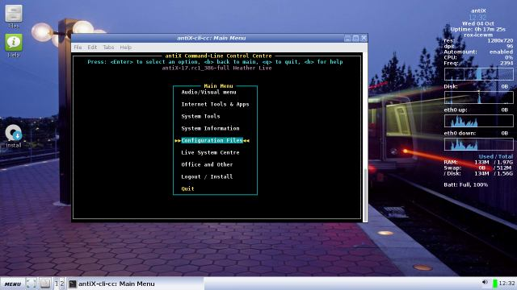

On this page:
antiX-cli-cc
[top]

The command line Control Centre contains a nested set of graphical menus that you can easily navigate to find useful command line programs.
The purpose is twofold: to make it easy to get to these commands quickly and to demonstrate what commands are available and what they do.
Navigation:
Use the arrow keys and Home and End to move up and down in a menu. Enter selects the highlighted item, either a submenu or a program to run.
Command File:
A list of all the commands you execute is stored in the file antiX-cli-cc.cmd in your current working directory. This is a handy way to learn how to use the commands without the Control Centre.